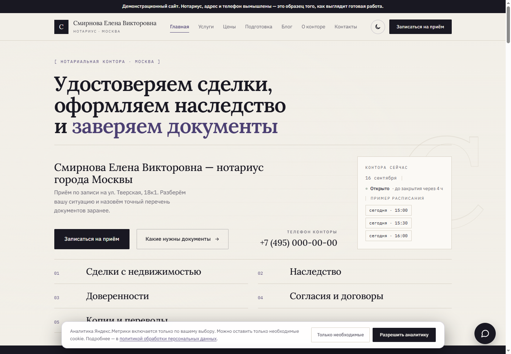
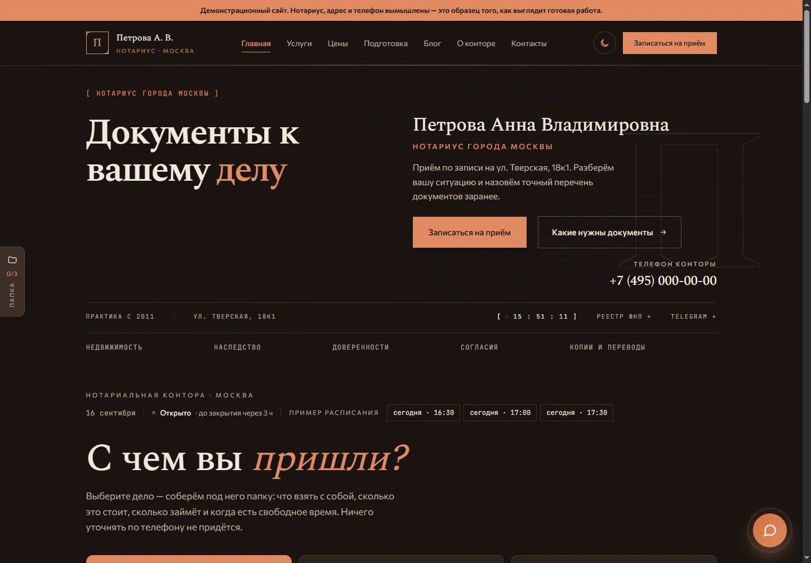
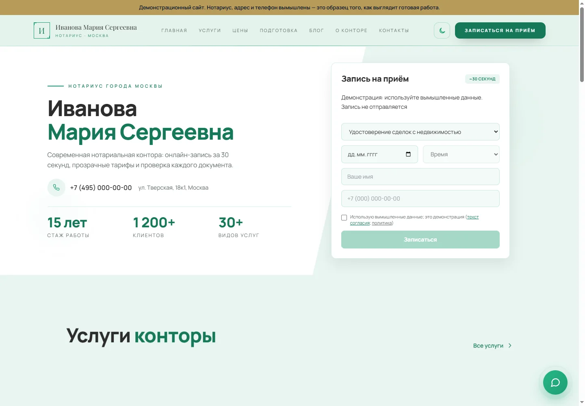
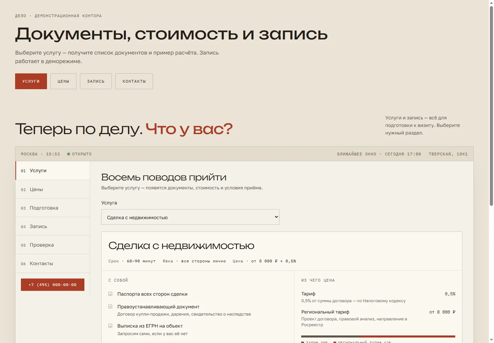

Сайт нотариуса и приём заявок
Сайт помогает выбрать услугу и подготовить документы. Сотрудник получает заявку в кабинет — и уведомление в Telegram.
Нужна доверенность
на автомобиль
Сотруднику — уведомление со ссылкой на кабинет
Слева — то, что видит клиент на вашем сайте. Справа — то, что в эту же секунду происходит у вас. Нажимайте в окне клиента: это интерактивная симуляция. Данные никуда не отправляются — используйте вымышленные имя и телефон.
Это локальная симуляция сценария, а не подключённая контора. Вопросы, документы и расписание для запуска настраиваются отдельно.
Попробуйте настройки в локальном макете кабинета: поменяйте цену, срок или список документов. Изменения видны только в демонстрации на этой странице.
Настройки влияют на симуляцию чата выше. Кабинет после подключения сервиса: демо-кабинет конторы.
Пять характеров — один понятный путь к записи. Откройте понравившийся вариант и попробуйте демо с вымышленными данными.

Лавандовый С калькулятором стоимости услуг
Тёплый С чек-листом «что взять с собой»
Зелёный С поиском ближайшего свободного времени
Дело — бумажный стиль Одна страница, разделы вкладками. Со сценой: лист становится документомОформление подбирается под вас — можно взять любое из пяти или собрать в ваших цветах. Наполнение всегда своё: услуги, цены, фотографии, контакты.
Два разных дела и две разные цены. Сайт — работа один раз. Приём заявок — сервис, который работает каждый день: сервер, хранение документов, обновления, ответственность за сохранность данных.
Готовые сайты у меня пока нотариальные — с услугами, ценами, подготовкой к визиту и блогом под эту профессию. Юристу, риелтору, бухгалтеру или миграционному центру подключаю приём заявок к уже существующему сайту: там отличаются только услуги и списки документов, а всё остальное общее. Сайт для другой профессии — отдельный разговор и отдельный срок.
Разработка сайта оплачивается один раз; домен и хостинг — отдельно. Подписка на приём заявок покрывает эксплуатацию сервера, обновления и согласованные процедуры хранения и резервного копирования. До запуска проверяем размещение данных и фиксируем условия в договоре.
Домен и хостинг сайта оплачиваются напрямую вами и в эти суммы не входят — обычно это 1 000–2 000 ₽ в год за домен. Сервер приёма заявок при желании переоформляется на вас.
Условия работы описаны в публичной оферте: договор считается заключённым с момента оплаты счёта. Отказаться можно в любой момент — как считается возврат.
Обсудим услуги и расписание → подготовлю сайт и кабинет → вы проверите настройки и подключите сотрудников. Срок и состав работ согласуем до оплаты.
Через сервис проходят паспорта и свидетельства. Построено под требования 152-ФЗ о персональных данных.
Клиент подтверждает обработку данных прежде, чем заявка будет создана. Отказался — заявки нет.
Файлы лежат в зашифрованном виде. Защищённая ссылка на загрузку живёт полчаса и закрывается после завершения отправки.
Для вложений предусмотрено автоматическое удаление по сроку. Порядок хранения заявок, журналов и резервных копий согласуем отдельно до запуска.
Кто, когда и какой документ смотрел. Журнал выгружается в файл.
Перед приёмом настоящих заявок проверяем размещение баз, файлов и резервных копий в России. Адрес сайта сам по себе этого не подтверждает.
Перед запуском подписывается поручение на обработку персональных данных: оператор — вы, я обрабатываю данные по вашему поручению и в ваших целях. Политика и текст согласия, которые увидит ваш клиент, опубликованы в свободном доступе — вот как они выглядят на демонстрационной конторе. Страница собирается из вашей карточки, поэтому у каждого нотариуса она своя и называет оператором именно его.
Заведу вашу контору с вашими услугами и покажу, как это работает на ваших делах, а не на примере из демонстрации. Это бесплатно и ни к чему не обязывает.